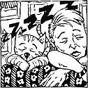

IN MY PRACTICE I'VE SEEN count less animals and their owners, and nearly every type of pet known to man-from Great Pyrenees dogs to Persian cats, from panthers to pythons, hamsters to hogs.
At our house, too, we've had a constant parade of animal guests, ranging from the mundane to the mysterious-all of them loved. So it's with a plethora of pet experience that I offer the following tips on how to select the pet that'll best fit your home sanctuary.
Now, I'm going to approach this subject in a manner that you might find unusual. You see, I feel that in a compatible person/pet relationship, the animal's personality mirrors the owner's and vice versa. So it's my opinion that when deciding on what kind of pet you want, you need to look within to see the kind of person you are.
Are you affectionate to a fault? Do you feel a real need to be around friends often? Do you tend to be enthusiastic, active? If these characteristics fit you, you're a prime candidate for a dog-or most dogs, anyway. Dogs vary widely not only in their size and in the amount of "fur" they carry, but also in personality traits. Some breeds tend to be more outgoing than others, some less active, some friendly and some downright temperamental.
If you enjoy quiet and relaxation, if you like affection but don't feel a constant need for it, you're a likely cat person. If you are exuberant at times and have a flair for humor, a bird may be your best choice. And don't overlook the other pets when you're trying to matchmake yourself. At one point I was a turtle person; it was a time in my life when I needed to learn how to calm myself, to become more meditative. My turtle's unblinking eyes and slow, barely discernible breathing were my teachers, my mirror into the inner self.
Care and Keeping?
Once you've looked within to find the kind of pet personality that's right for you, take another look-but this time at your pocketbook and other practical factors. Be honest with yourself. Realistically, how much care and attention can you offer? Your own and your family's needs come first, of course. How much time, patience and money do you have left over for a pet?
Some animals require a great deal of time and attention. Consider a pooch, for example. Those first few months of training a pup to be an acceptable member of human society can be nearly a full-time job. And, though dog-training chores gradually diminish as the animal learns the whys and ways of mankind, the training never really ends. You have, after all, accepted with a pup the responsibility to tend an animal that will never progress beyond the unbridled exuberance (and inherent destructiveness) of the average two-year-old child.
Though no pet is care-free, some types require much less care and keeping than others. My advice to you is to honestly appraise the amount of extra time and energy you have (don't rely on the spouse or your youngsters; it's best to assume that all the pet chores will fall in your lap). Then weigh that excess against the amount of care that a pet you're considering will require every day, seven days a week. If you don't know how much care and keeping to expect from a particular type or breed of animal, ask your veterinarian or someone who has raised and trained one (don't ask the person trying to sell the critter to you).
And then there's the expense of pet care. Like they say, "It ain't the price of the marriage certificate that's so high; it's all that upkeep afterwards." Pet prices vary from free to several thousand dollars. You pick your own entry level, but whatever the initial price tag, it will be only the beginning. Consider the hidden costs involved with a dog, for example. There's the doghouse and pen, the leash, rawhide bones, flea powder, shampoos, chew toys, the grooming, the food dishes-and the food itself.
And the vet bill gets added to all that. I tell owners to set aside $50 to $100 per year on average for a dog's veterinary expenses, a little less for a cat. That'll cover most routine expenses here in Kansas, where I practice. But if you live in a more expensive area, or if your pet requires unusual or emergency treatment, your vet bills can skyrocket.
How Much Space?
OK, let's say that your heart, the amount of time you have and your pocketbook are all big enough for a pet. The next question is: Do you have enough room?
If you live in a one-room studio apartment, obviously you'll need to look for a pet that is content in small spaces. A reptile terrarium, a fluff of hamster or gerbil, a bird or perhaps a cat are reasonable choices. And don't overlook fish. An aquarium of fish will, in exchange for a periodic feeding and a modest amount of attention to water purity, provide you an amazing amount of soothing and calming energy through the fishes' watery comings and goings.
If, on the other hand, your manse sits in the middle of a full section of rural land, your pet horizons are far greater and include many a different species and breed of animal.
The key point to keep in mind here is that a pet is your- and only your-responsibility. Many people, when deciding on a pet, tend to look only at what the pet can offer them. It's important to keep your expectations in mind, of course-after all, if you're looking for an animal that will faithfully guard your belongings, a gerbil clearly will not do. But it's also important to honestly assess what you have to offer-in personality, time, budget and space. Know thyself, and you'll know what kind of pet will be happiest sharing your life.
Dr. Kidd, a long-time contributor to MOTHER EARTH NEWS, is a Kansas-based veterinarian with a special interest in holistic health care for animals and their owners.
|
|
|
 |